오늘의 arXiv Top 15
2026-11-09 (월) · cs.CV / cs.LG / cs.RO / cs.CL / cs.AI New submissions 전수 평가
403
신규 논문
93
cs.CV
121
cs.LG
54
cs.RO
41
cs.CL
94
cs.AI
15
정밀 리뷰
분야별 필터
전체 15개 논문 표시 중
1
88점
On Agentic Manipulation Policies
Manipulation
relevance 10/10
Robotics (cs.RO)
범용 frontier model이 grasp·place skill 없이 코드로 manipulator를 직접 움직이고 결과를 보며 계획을 고치는 harness AMP1을 만듦. demonstration이나 과제별 학습 없이 시뮬레이션 조작 과제 120개(RoboLab-120)의 성공률 85.6%를 얻어, 가장 강한 VLA의 49.2%를 앞섬.
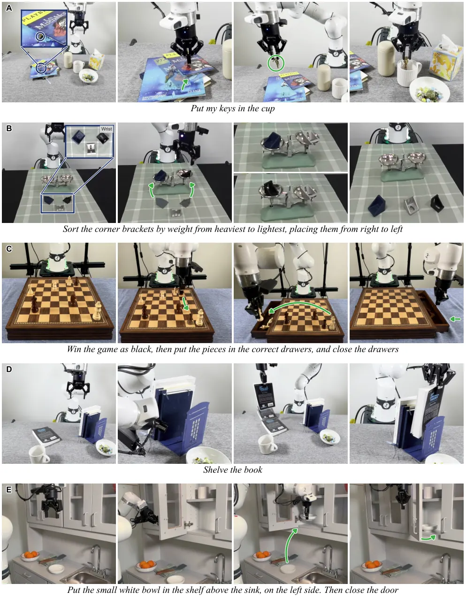
무슨 문제인가
로봇 조작 연구는 robot demonstration으로 학습한 VLA와 WAM(world-action model) 같은 전용 policy가 중심이었음. 범용 AI 모델을 쓰는 기존 방식은 주어진 skill을 골라 잇는 skill orchestration과, 실행 전에 제어 프로그램을 한 번 쓰는 code-as-policies였음. 앞의 방식은 제공된 skill이 할 수 있는 동작에 묶이고, 뒤의 방식은 실행 중에 모델이 전략을 다시 고르지 못함. 범용 모델이 제어 loop 안에서 manipulator를 직접 움직이려면 공간 인지가 부족한 것이 문제였으나, 최근 모델의 공간 인지가 좋아져 이 방식을 체계적으로 따져 볼 수 있게 됨.
어떻게 푸나
AMP(agentic manipulation policy)는 범용 모델이 제어 loop 안에 남아 manipulator에 직접 명령하고, 새 관측을 볼 때마다 행동을 고치는 policy를 가리킴. AMP1은 이를 위한 기준 harness로, 입력은 자연어 지시와 카메라 영상(depth, camera calibration 포함)이고 출력은 robot을 움직이는 코드임. 모델이 한 번 응답하면 harness가 그 안의 tool call을 실행함: 카메라 이미지 읽기, robot pose 조회, trajectory 계산, robot 이동 등임. 한 turn의 코드로 trajectory 전체를 명령할 수 있고, 이미지는 모델이 요청할 때만 context에 들어감. harness는 grasp·push·place primitive를 주지 않으므로, 모델이 용기 크기 재기나 grasp를 물체 축에 맞추기 같은 절차를 episode마다 코드로 새로 만듦. harness가 동작을 거부하거나 실행이 실패하면 모델이 그 이유를 읽고 계획을 고침. AMP1+는 여기에 episode 사이에 유지되는 memory 폴더를 더한 것으로, 모델 가중치는 고정한 채 노트와 Python 코드를 쌓음.
결과
- RoboLab-120(자연어로 지시한 시뮬레이션 조작 과제 120개 모음)에서 zero-shot 성공률이 Gemini 4 Argon과 짝지으면 85.6%, Opus 5.5와 짝지으면 82.8%임. leaderboard의 가장 강한 VLA는 49.2%, WAM은 42.9%임. 모호한 지시에서 leaderboard 최고 WAM인 FLUX 3 Action은 42.9%에서 28.4%로 내리지만, AMP1(Gemini 4 Argon)은 84.0%를 유지함.
- 실제 Franka Research 3 팔에서 과제 12개를 과제당 9회 평가함. 성공률은 AMP1(Opus 5.5) 96.3%(108회 중 104회), FLUX 3 Action 45.4%, π0.5 27.8%임. 충돌로 멈춘 controller 오류를 풀고 다시 계획하는 기능(robot error recovery)은 AMP1만 쓸 수 있었고, 이를 끄면 AMP1 성공률은 87.0%(108회 중 94회)임.
- harness를 고정하고 모델만 바꾸면 RoboLab-120 성공률이 Opus 5.5 82.8%, Haiku 5.5 51.6%, Opus 4.5 35.2%로 차이가 큼. 카메라 영상 대신 장면의 텍스트 설명을 주면 Opus 5.5 성공률이 82.8%에서 36.8%로 내림.
- RoboDojo(양팔 시뮬레이션 조작 과제 42개)에서 AMP1+가 과제마다 최대 48 episode를 연습하면, 처음 보는 layout의 성공률이 zero-shot 26.4%에서 84.1%로 오름. leaderboard 최고 기록은 68.9%임. 과제 42개를 한 번씩 차례로 풀며 memory를 쌓는 continual 설정에서는 57.6%까지 오름.
한계
모델이 추론하는 동안 robot이 기다리므로 느림: 실로봇 성공 episode 평균 280초 중 211초가 추론 시간임. 실로봇 실험은 Franka 팔 하나뿐이라 양팔과 mobile manipulation은 시뮬레이션에서만 보임. RoboDojo 연습 결과는 과제마다 연습 과정 전체를 5번 돌려 가장 자주 성공한 run을 평가한 값임. 성능 차이의 대부분이 frontier model 선택에서 나오므로, 전체 시스템 비교일 뿐 harness 설계 자체의 기여를 따로 떼어 보인 것은 아님.
누리랩 연구와의 연결
- 범용 모델이 loop 안에서 실패 원인을 진단하고 계획을 고치는 구조라, failure detection/recovery와 test-time reasoning 연구에서 VLA와 함께 비교할 baseline이 됨. 동작이 막히자 카메라에 안 보이는 위쪽 선반이 있다고 추정하고 접근 각도를 바꾼 사례는 active perception 사례로도 쓸 수 있음.
- AMP1+의 memory는 가중치 대신 노트와 코드를 쌓아 과제 사이로 옮기는 robot memory 사례임. continual 설정의 과제 순서를 네 묶음(S1~S4)으로 나눴을 때, S1만 풀며 쌓은 memory로도 마지막 묶음 S4의 성공률이 24%에서 47%로 오른 결과가 근거임.
2
78점
Q-OIL: Optimistic Exploration in Learning from Human Interventions
RL
relevance 8/10
CoRL 2026 채택
Robotics (cs.RO)
사람이 로봇을 잠시 대신 조종한 구간(intervention)을 따라 할 정답이 아니라 탐색할 방향을 알려 주는 신호로 쓰는 online RL 방법 Q-OIL을 제안함. 사전학습 VLA를 residual policy로 고치는 양팔 bag assembly 과제에서 전체 과제 성공률을 BC+RL의 0%에서 50%로 올림.
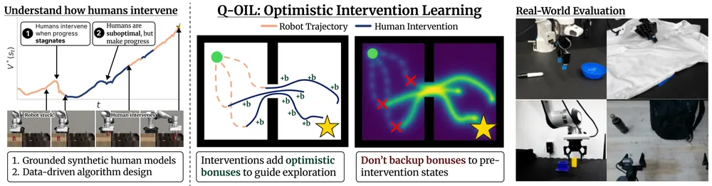
무슨 문제인가
로봇이 막히면 사람이 조종을 넘겨받아 바로잡는 intervention은 배포 중에 자연스럽게 생기는 feedback임. 이를 학습에 쓰는 알고리즘은 실로봇 실험이 느려서 대부분 시뮬레이션 속 가상 사람 모델로 개발함. 기존 가상 모델은 사람이 지금 한 행동이 나쁠 때 바로 개입한다고 가정하고(Markovian 가정), 기존 알고리즘은 사람의 교정 행동을 거의 정답처럼 다룸. 저자들은 실제 사람 데이터가 이 두 가정과 맞지 않으면 시뮬레이션에서 내린 알고리즘 비교 결론이 실제 사용자에게 옮겨지지 않는다고 봄.
어떻게 푸나
먼저 참가자 8명이 시뮬레이션 로봇 조작 과제 3개를 감독한 데이터(24회 실행, 약 20만 transition)를 분석함. 개입한 시점의 가치는 개입하지 않은 시점과 거의 같았고, 개입은 여러 step 동안 가치 V*(최적 policy 기준으로 잰 상태 가치)가 멈추거나 떨어진 뒤에 일어났음. 사람의 교정 행동은 최적 행동 대비 목표까지 걸리는 step 수의 비율(1이 최적)이 평균 3.16으로, 사람 demonstration의 1.91보다 나빴음. 이를 바탕으로 최근 k step 동안의 가치 상승이 임계값 아래이면 개입 확률을 높이는 가상 사람 모델 PAM(progress-aware model)을 만들고, 가상 사람의 교정 행동은 성공률 약 50~70%인 중간 RL checkpoint에서 뽑음. Q-OIL(Q-Optimistic Intervention Learning)은 개입이 일어난 transition에 작은 양의 보너스 reward를 더해 그 근처를 더 탐색하게 함. critic은 둘로 나눔: task critic은 task reward만으로 학습하고, optimistic critic은 task reward와 보너스를 받되 다음 상태 가치는 task critic에서 가져옴. 이렇게 하면 보너스가 개입 직전, 즉 로봇이 실패하던 상태로 거꾸로 퍼지지 않음. policy는 optimistic critic을 최대화하고, 개입 행동에 대한 약한 behavior cloning 항(가중치 0.1)을 함께 받음. 개입이 줄어들면 보너스 transition이 replay에서 덜 뽑혀 optimistic critic이 task critic에 가까워짐.
결과
- 가상 사람 모델이 실제 사람과 같은 알고리즘 순위를 내는지 봄. 알고리즘 6개를 최종 성공률로 줄 세웠을 때 PAM의 순위는 실제 사람 감독 순위와 Spearman 상관 1.0으로 일치함. 다른 사람 데이터로 개입 시점을 맞히는 실험에서 recall은 PAM 0.6059, 순간 행동 비효율 기반 모델 0.4489임.
- 실제 Franka 로봇 과제 3개(펜을 그릇에 넣기, 페그 끼우기, 셔츠 단추 풀기)에서 한 사람이 개입하며 학습함. 비교 대상은 개입 행동을 behavior cloning 정답으로 쓰는 HG-DAgger, 개입을 replay buffer에 넣는 off-policy RL인 HIL, 그리고 BC+RL임. 저자 보고로 이들 대비 성공률이 10~50% 높고, 사람 개입량은 약 30% 적으며, 1,000 step당 성공 횟수는 평균 90% 많음. 표 없이 곡선 그림으로만 제시됨.
- 고정한 사전학습 VLA에 residual policy를 붙여 실제 양팔 로봇(I2RT YAM)으로 학습함. 전체 과제 성공률은 bag assembly(병을 집어 가방 옆주머니에 넣기)에서 Q-OIL 50% 대 BC+RL 0%(30회 평가), coffee pouring(시험관의 원두를 비커에 붓기)에서 70% 대 30%(10회 평가)임. 학습 중 개입 step 비율은 18.1% 대 25.2%, 10.7% 대 23.8%로 Q-OIL이 낮음.
- critic 분리를 뺀 ablation을 Robomimic(시뮬레이션 집기·조립 과제 모음) 3개 과제 평균으로 봄. 보너스를 0.01에서 0.5까지 50배 바꿔도 Q-OIL 성공률은 유지되고, critic이 하나인 변형은 보너스가 클수록 성공률이 내려감.
한계
사람 행동 분석은 참가자 8명, 시뮬레이션 과제 3개에 기대고, 실로봇 학습은 감독자 한 명과 탁상 조작 과제 5개(Franka 3개, 양팔 VLA 2개)뿐임. 실로봇 비교에서 한 과제는 HIL이 학습하지 못해 baseline을 더 오래 돌렸으므로 상호작용 예산이 모든 비교에서 같지는 않음. VLA 실험에서 어려운 마지막 하위 과제를 국소 탐색이 고쳤다는 설명은 저자의 가설이고 따로 검증하지 않음. 본문에 코드 공개 여부는 적혀 있지 않음.
누리랩 연구와의 연결
- 사람 개입을 실패 복구 신호로 보고 그 정보가 실패 직전 상태로 퍼지지 않게 막는 설계임. failure detection·recovery 연구에서 복구 데이터를 policy 학습에 넣는 방식의 비교 대상으로 쓸 수 있음.
- 고정된 VLA에 residual policy를 붙이고 사람 교정으로 online RL을 하는 구성은 VLA를 배포 중에 고치는 test-time adaptation 실험의 baseline으로 바로 쓸 수 있음.
3
74점
Toward the Era of Agentic Embodied Intelligence
VLA
relevance 9/10
Robotics (cs.RO)
VLA policy가 실패 뒤 다시 시도할 때 무엇을 바꿀지를, 언어 지시와 공간 증거와 실행 이력을 묶은 학습된 correction code로 action 생성 안에 넣는 multi-agent 시스템 A2-MEAS를 만듦. 실로봇 커피 내리기의 필터 다루기 단계에서 실패 후 단계 완료율이 14%에서 94%로 오름.
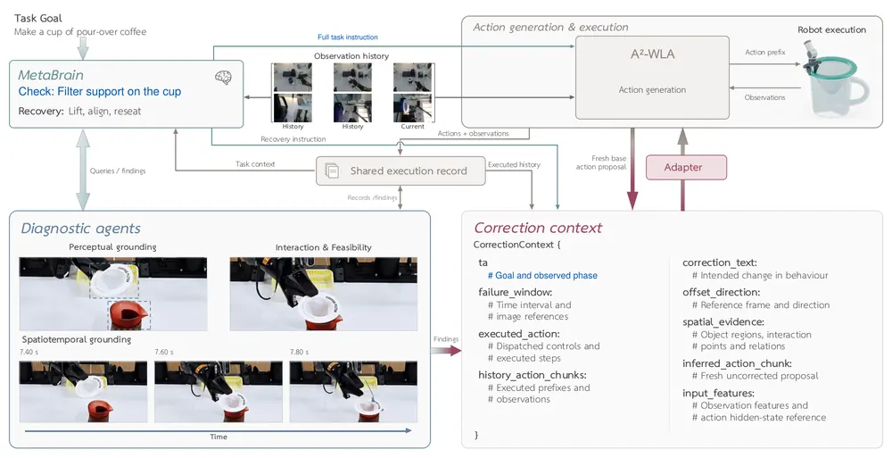
무슨 문제인가
언어 모델 기반 skill selection이나 replanning은 실패 뒤 무엇을 다시 할지는 정하지만, 다음 시도가 어떻게 달라야 하는지는 정하지 못함. 잡기에 실패했을 때 같은 policy로 retry만 하면 비슷한 동작이 되풀이될 수 있음. 접근 방향, 정렬, gripper 타이밍을 실패 증거에 맞게 바꾸려면 진단 결과가 action 생성 자체에 들어가야 함. 긴 과제에서는 국소 복구가 성공해도 남은 과제를 이어 갈 수 있는 상태가 되어야 하므로 이 연결이 더 중요함.
어떻게 푸나
A2-MEAS는 action policy, coordinator, 진단 agent 세 부분이 공유 실행 기록을 보며 협력하는 구조임. action policy인 A2-WLA는 지시와 관측을 받아 action chunk를 내는 VLA로, 2B Qwen3-VL backbone에 프레임 변화를 담는 history encoder와 latent world model(미래 시각 feature 예측)을 붙임. 이상이 감지되면 실행을 멈추고, MetaBrain(Qwen3.8-27B 기반 coordinator)이 진단 agent에게 물체 위치, 접촉, 지지, 도달 가능성을 확인시킨 뒤 복구 지시를 씀. condition encoder는 복구 지시, 검증된 공간 증거, 실행 이력, base policy가 새로 낸 보정 전 proposal을 correction code 하나로 묶음. 18층 action expert의 9층 뒤에 붙은 residual adapter가 flow-integration 단계마다 이 code로 hidden state에 위치별 residual을 더해 보정된 chunk를 만듦. adapter는 base policy를 고정한 채, demonstration 상태에서 policy proposal이 expert와 크게 어긋난 구간에 MetaBrain이 지시를 단 데이터로 학습하고, 배포 때는 가중치를 모두 고정하고 새 code만 바꿈.
결과
- 실로봇 커피 내리기(한 번에 약 4분)의 필터 다루기 두 단계에서 실패 후 단계 완료 횟수를 잼. 이력 조건 Adapter를 켜면 100회 중 94회와 82회이고, Adapter 없이 같은 A2-WLA로 retry하면 14회와 8회임. 커피 과제 전체가 아니라 끊긴 단계를 이어 갔는지를 잰 값임.
- BEHAVIOR 2026 공개 과제 100개(시뮬레이션 가정 환경의 장기 전신 조작 과제 모음)에서 전체 시스템의 Q-score(목표 조건 충족 비율)는 0.6411, 과제 완수율은 45.40%임. MetaBrain·진단·보정 없이 A2-WLA 모델 여러 개만 쓴 baseline은 0.6040과 40.60%임. 시스템 전체끼리의 비교라 Adapter만의 효과로 볼 수는 없음.
- 보정 없는 A2-WLA도 공개 과제 50개 subset에서 과제별 특화 policy로 Q-score 0.5755를 냄. 2025년 우승팀 RLC가 보고한 0.2605의 약 2.21배이나, benchmark 연도별 버전과 학습 설정이 달라 통제된 비교는 아님.
- 실로봇 탁상 과제 12개(가정 환경 5곳, 과제당 20회)의 평균 성공률은 A2-WLA 57.92%, π0.5 26.67%임. RoboTwin 2.0(양팔 단기 조작 benchmark) 평균 성공률은 A2-WLA 93.98%, 전체 시스템 95.05%임.
한계
보정 과정은 진단을 위해 실행을 멈추므로 즉각 반응이 필요한 상황에는 맞지 않음. Adapter 학습 데이터는 실제로 실행된 실패가 아니라 demonstration 상태에서의 proposal 편차라서, 실패 뒤 바뀐 물체 배치나 grasp 상태를 담지 못함. 실로봇 복구 실험은 전체 interface가 아니라 이력만 쓰는 Adapter 변형이고, 100개 과제 중 10번 모두 성공한 과제는 11개뿐임.
누리랩 연구와의 연결
- failure diagnosis와 recovery 연구와 바로 이어짐. 진단 결과를 skill 선택이 아니라 VLA action expert의 hidden state에 넣는 방식은, 언어 피드백을 행동으로 바꾸는 interface를 설계할 때 비교 대상이 됨.
- 가중치를 고정하고 조건 code만 바꿔 행동을 고치는 구조는 test-time adaptation과 robot memory(실행 이력 encoding) 연구에 쓸 수 있음. latent world model을 붙인 A2-WLA는 world model 기반 VLA의 baseline 후보임.
4
74점
Goodhart in the Planner: Sampling-Based Control Exploits Rewards Learned from Human Preferences
RL
relevance 8/10
Robotics (cs.RO)
사람 선호로 학습한 reward를 sampling 기반 planner(MPPI)로 세게 검색하면, 출발점인 cloned policy보다 true return이 낮아짐을 측정하고 안전한 검색 강도를 정하는 규칙을 증명함. 사람 label 300쌍으로 학습한 reward로 hard search를 하면 서랍이 20회 중 한 번도 열리지 않음(cloned policy는 10회 중 10회).
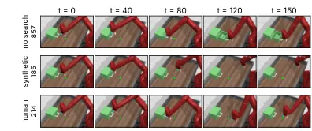
무슨 문제인가
선호 label로 학습한 reward model을 MPC 안에서 최적화하거나, 후보 행동 N개 중 learned verifier가 고른 것을 실행하는 로봇이 늘고 있음. 언어 모델 정렬에서는 learned reward를 너무 세게 최적화하면 실제 품질이 내려가는 reward overoptimization이 잘 알려져 있음. 로봇 planner는 검색 세기가 temperature와 sample 수로 정해지고, 매 step 다시 계획하며, label이 수백에서 수천 개뿐이라는 점이 다름. 이런 planner가 learned reward를 얼마나 악용하는지는 측정된 적이 없었음.
어떻게 푸나
MPPI(Model Predictive Path Integral)는 현재 상태에서 action sequence N개를 굴려 보고, learned return이 높은 것에 큰 weight를 준 평균의 첫 action을 실행함. 저자들은 proposal을 label 데이터에서 behavior cloning한 policy의 계획 주변 noise로 뽑음. 이 cloned policy가 RLHF의 reference policy 역할을 함. reward(이하 scorer)는 선호 쌍에 Bradley-Terry likelihood로 학습한 2층 MLP이고, dynamics는 실제 MuJoCo simulator를 써서 실패 원인을 reward에만 둠. 이론으로는 scorer 오차의 proposal 간 퍼짐 σ가 주어지면, temperature λ와 proposal 대비 계획 weight의 χ² divergence 제곱근을 곱한 값이 σ와 같아지면 χ² 정규화 MPPI가 worst-case 최적임을 보임. σ가 scorer 점수 자체의 퍼짐보다 크면 어떤 검색도 이득을 보장할 수 없으므로 검색하지 않음. 실전에서는 true return으로 순서를 매긴 proposal 100쌍에서 scorer가 맞힌 비율로 σ를 추정해 temperature를 정함.
결과
- Drawer-open(Meta-World 서랍 열기 과제)에서 저자 한 명의 blind label 300쌍으로 학습한 scorer를 씀. λ가 0.1 이하인 hard search에서 true return이 201~216이고 서랍이 20회 중 0회 열림. cloned policy는 898(10/10)임. 이 scorer의 held-out 정확도는 0.97로 학습한 scorer 중 가장 높음.
- 같은 과제에서 synthetic label 500쌍이면 true return이 약한 검색(λ=3)의 707에서 hard search의 504로 내림. 이때 scorer가 매긴 실행 episode 점수는 56에서 674로 오름. 이 scorer는 held-out 정확도 0.88이지만 planner proposal에 대한 상관 ρ는 0.10뿐임.
- 100쌍 oracle 보정 temperature는 독립 보정 세트 5개 모두에서 drawer 818~852, plate-slide(접시 밀기) 806~1,013을 내고 과제마다 50회 모두 성공함. 같은 scorer의 hard search는 611(8/10)과 351(6/10)임. window-open(창문 열기)처럼 검색이 이득인 곳에서는 309~318로 standard MPPI의 392보다 낮음.
- label 500쌍 중 절반을 planner가 실제로 간 궤적에 붙이면 drawer hard search가 504(11/20)에서 834(8/10)로 오름. best-of-N은 synthetic 500쌍 verifier로 N=1,024일 때 drawer 388, plate-slide 143까지 내려감. 이는 cloned action에 noise를 더한 후보 하나를 검색 없이 실행한 경우(drawer 755, plate-slide 878)보다 낮음.
한계
모든 실험이 시뮬레이션이고, scorer는 state 입력의 작은 MLP이며, 사람 label은 저자 두 명이 두 과제에 단 것뿐임. planning에 실제 simulator를 써서 learned dynamics 오차는 다루지 않음. 가장 안전한 보정은 true return으로 순서를 매긴 oracle 쌍에 기대며, label을 단 사람으로 보정하면 그 사람과 scorer가 공유한 편향을 잡지 못함.
누리랩 연구와의 연결
- test-time optimization과 VLA의 best-of-N action selection에서 verifier를 얼마나 세게 최적화할지 정하는 기준으로 바로 쓸 수 있음. planner 자신의 proposal에서 scorer 상관을 재라는 진단은 failure detection 지표로도 이어짐.
- world model 기반 planning에서 learned reward와 learned dynamics가 함께 악용되는 경우를 다룰 때 출발점이 되는 분석임.
5
74점
Encoding Memory in World Models with Test-Time Model-Based Reinforcement Learning
World Model
relevance 8/10
ICLR 양식 (추정)
Machine Learning (cs.LG)
world model이 지난 관측을 context로만 기억하던 방식을 바꿔, 평가 중인 episode의 관측으로 world model 가중치를 test time에 gradient descent로 계속 학습시킴. 3D Memory Maze 15×15에서 R2I(state space model 기반 Dreamer 계열 agent) 점수가 42.0에서 54.1로 오름.
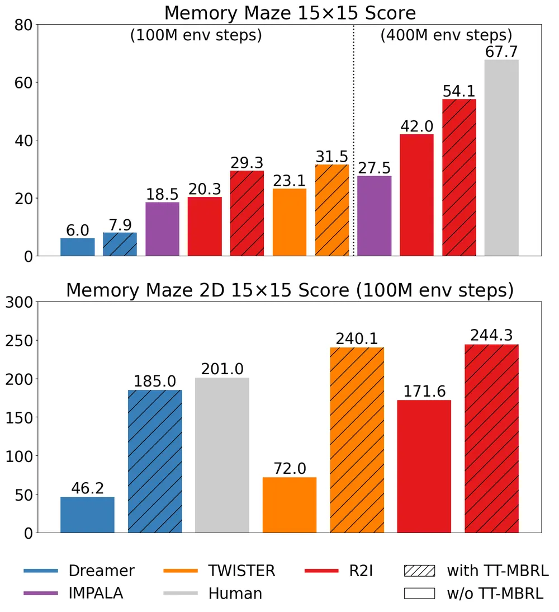
무슨 문제인가
Dreamer 계열 world model은 부분 관측 환경에서 먼 미래를 상상할수록 예측 오차가 쌓여 과거 관측과 어긋난 장면을 만듦. 예를 들어 Memory Maze에서 DreamerV3는 원래 자리로 돌아온 시점(t = 45)의 장면을 실제와 다르게 예측함. 기존 해결책은 Transformer나 state space model처럼 긴 context를 다루는 backbone을 만드는 것이었음. 이 방식은 하나의 공유 world model이 매 episode의 고유한 미로 구조를 context만으로 잡아야 하고, 그래도 사람 점수에는 못 미쳤음.
어떻게 푸나
TT-MBRL(Test-Time Model-Based Reinforcement Learning)은 이미 학습된 Dreamer 계열 agent를 평가 episode마다 따로 fine-tuning함. episode가 시작되면 학습된 world model, actor, critic 가중치를 복사하고, 이 episode만 담는 빈 test-time replay buffer를 만듦. 매 환경 step마다 새 관측을 buffer에 넣고, world model을 gradient step 한 번씩 업데이트함. mini-batch의 절반은 test-time buffer에서, 절반은 학습 때의 replay buffer에서 뽑아, 초반의 적은 관측에 overfitting하지 않게 함. 이때 encoder와 decoder는 고정하고 reconstruction loss를 빼서, sequence model, dynamics predictor, reward·continue head만 바뀌게 함. 이어서 업데이트된 world model 안에서 상상한 rollout으로 actor와 critic을 다시 학습하고, 이 policy로 다음 행동을 고름.
결과
- Memory Maze(1인칭 3D 미로에서 테두리 색이 가리키는 물체를 찾아가는 기억 과제, 15×15는 물체 6개·episode 4,000 step)에서 400M step 학습한 R2I 점수가 42.0에서 54.1로 오름. 사람 점수 67.7에는 못 미침. 13×13에서는 60.1에서 63.0으로 오름.
- 같은 15×15에서 100M step 학습 기준으로 세 backbone 모두 점수가 오름: DreamerV3 6.0에서 7.9, TWISTER(Transformer 기반 Dreamer 계열 agent) 23.1에서 31.5, R2I 20.3에서 29.3임. 미로가 작아 이미 점수가 거의 최고인 9×9에서는 차이가 없음.
- 계산량을 맞춘 대조 실험(Memory Maze 2D: 위에서 본 3×3 주변만 보이는 2D 미로판) 15×15에서 R2I는 TT-MBRL 없이 171.6임. 학습 데이터로만 추가 업데이트하면 171.7, episode 데이터와 학습 데이터를 섞으면 244.3임. 점수 상승이 계산을 더 써서가 아니라 episode 관측을 가중치에 넣은 덕이라는 근거임.
- 3D 15×15에서 R2I(400M step)의 64 step 예측 FVD가 111.1에서 70.7로 내리고, PSNR이 21.7에서 26.0으로 오름. step당 얻는 reward의 상대 향상은 episode가 진행될수록 커져 4,000 step에서 53.7%에 이름.
한계
episode마다 world model과 policy를 새로 학습하므로 평가 시간이 늘어남. 3D 15×15에서 R2I 한 episode 평가에 약 39분(0.65시간)이 듦(encoder 고정 기준). 실험은 미로 과제와 DMC(DeepMind Control Suite 연속 제어 과제 20개)·Atari 100k 시뮬레이션뿐이고, 실로봇이나 연속 제어 기억 과제는 다루지 않음. 코드는 공개 예정이라고만 적혀 있음.
누리랩 연구와의 연결
- robot memory를 context 길이가 아니라 episode 중 가중치 업데이트로 다루는 사례임. 부분 관측 manipulation이나 navigation에서 world model을 test-time optimization으로 장면에 맞추는 연구의 비교 대상이 됨.
- DMC의 Reacher Hard처럼 목표를 자주 놓치는 과제에서 점수가 오른 결과는, test-time 적응으로 같은 실패를 줄이는 failure recovery 방향과 이어짐.
6
74점
MDF++: Visuo-Tactile World Action Model with End-to-end Representation Learning
World Model
relevance 8/10
CoRL 2026 (comments 표기)
Robotics (cs.RO)
시각·촉각 world-action model의 encoder를 함께 학습하되, 각 encoder가 자기 modality의 denoising loss로는 갱신되지 않게 막아 feature collapse를 피함. 시뮬레이션 과제 5개 평균 성공률이 encoder 고정 시 58.7%, 단순 공동 학습 시 64.1%에서 86.9%로 오름.
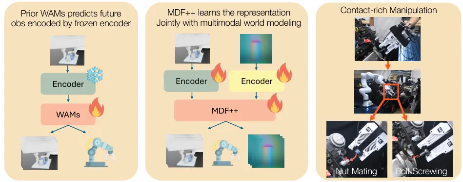
무슨 문제인가
world-action model(WAM)은 한 generative model로 행동과 미래 관측을 함께 예측하는 구조임. 기존 WAM은 대부분 시각만 쓰고, 재구성이나 self-supervised 목표로 미리 학습한 encoder를 고정해 그 latent 위에서 dynamics를 배움. 이런 latent는 영상 생성이나 의미 이해에는 맞지만 볼트 조이기처럼 접촉 정보가 중요한 제어에 맞는다는 보장이 없음. 촉각은 널리 쓸 만한 사전학습 encoder도 드묾. encoder를 diffusion loss로 함께 학습하면 encoder와 backbone이 denoising하기 쉬운 latent 쪽으로 같이 맞춰져 제어에 쓸 정보가 사라짐(feature collapse).
어떻게 푸나
MDF++는 저자들의 이전 방법 MDF(Multimodal Diffusion Forcing)를 바탕으로 함. MDF는 시간 단계와 modality마다 noise 수준을 따로 주어, noise 0인 token은 조건으로, noise가 큰 token은 예측 대상으로 다룸. 입력은 RGB와 촉각 이미지(각각 ViT-Tiny의 CLS token), 힘, proprioception, 행동 token의 시퀀스이고, 출력은 noise가 걸린 token의 denoising 결과임. 학습 때는 무작위 mask 대신 policy, 행동·관측 동시 예측, forward dynamics, inverse dynamics, 무작위 mask의 다섯 가지 조건 패턴을 같은 확률로 뽑음. 핵심 규칙은 각 관측 encoder의 출력에서 그 modality 자신의 denoising loss gradient를 끊는 것임. 그래서 RGB encoder는 촉각, 힘, 행동을 예측하는 loss로만 갱신되고, 촉각 encoder도 같은 방식으로 갱신됨. 실행 시에는 같은 모델을 policy 모드나 world-action 모드로 써서 행동을 만듦.
결과
- 시뮬레이션 과제 5개(Isaac Lab Factory의 PegInsert·GearMesh·NutThread 정밀 조립 3개, ManiFeel의 BallSort·ObjectSearch 촉각 탐색 2개)에서 방법당 150회 평가함. 평균 성공률은 MDF++ 86.9%, 모든 loss를 모든 encoder로 흘린 단순 공동 학습 64.1%, latent를 Gaussian 분포에 맞춰 collapse를 막는 SIGReg 정규화를 더한 경우 58.1%임.
- encoder를 고정한 변형의 평균 성공률은 ImageNet ViT 58.7%, 촉각 전용 사전학습 encoder Sparsh 58.9%, 미래 관측을 고정 SDXL VAE latent로 예측하는 UWM(촉각·힘 입력 추가) 74.2%임. 차이는 촉각 탐색 과제에서 큼: ObjectSearch 성공률이 MDF++ 85.3%, 고정 ViT 14.7%임.
- 고정한 RGB feature에서 행동을 맞히는 linear probe의 MSE가 MDF++ 0.043, 단순 공동 학습 0.520, 사전학습 ViT 0.163임. 촉각 feature의 effective rank는 MDF++ 33.34, 단순 공동 학습 5.99임.
- 실제 Franka 로봇이 실제 자동차 엔진에서 과제당 20회 시도함. 물체를 놓은 뒤에도 나사산에 고정되어 있는 성공 횟수가 볼트 조이기에서 MDF++ 16회, UWM 10회, 고정 ViT 6회임. 너트 끼우기에서는 각각 8회, 5회, 3회임.
한계
실로봇 실험은 나사 체결 과제 2개, 방법 3개, 과제당 20회이고 너트 끼우기 성공률은 40%에 그침. 시뮬레이션 표의 MDF 변형 2개와 자기 modality loss의 gradient를 일부만 흘리는 비율 실험의 중간 비율 결과는 seed 평균이 아니라 과제별 최댓값이고, 추론 모드도 과제마다 더 나은 쪽을 고름. UWM은 학습 단계 수와 backbone 설정이 MDF++와 달라 표현 방식만 비교한 결과로 보기 어렵고, modality별 loss 가중치는 손으로 맞춤.
누리랩 연구와의 연결
- 촉각과 시각을 같이 쓰는 world model을 contact-rich manipulation policy로 쓰는 사례임. 같은 모델이 forward dynamics로도 동작하므로, 접촉 실패를 예측해 감지하는 failure detection 연구의 비교 대상이 됨.
- 자기 modality loss를 끊는 gradient 규칙은 world model encoder를 end-to-end로 학습할 때 쓸 수 있는 단순한 장치임. VLA나 object-centric 표현을 world model과 함께 학습할 때 collapse 대책으로 시험해 볼 수 있음.
7
72점
HiMEM: Hippocampus-Inspired Memory Consolidation, Pruning, and Composition for Vision-Language-Action Models in 3D Scenes
VLA
relevance 10/10
ICRA·IROS·RA-L 계열 양식 (추정)
Computer Vision and Pattern Recognition (cs.CV)
VLA의 episodic memory에 쌓인 경험을 '조건, 동작, 성공확률' 규칙으로 요약하고, 규칙이 대신하는 중복 경험을 지워 검색을 흐리는 세부를 줄임. LIBERO 4개 suite 평균 성공률을 π0 기준 91.88%에서 98.20%로 올림.
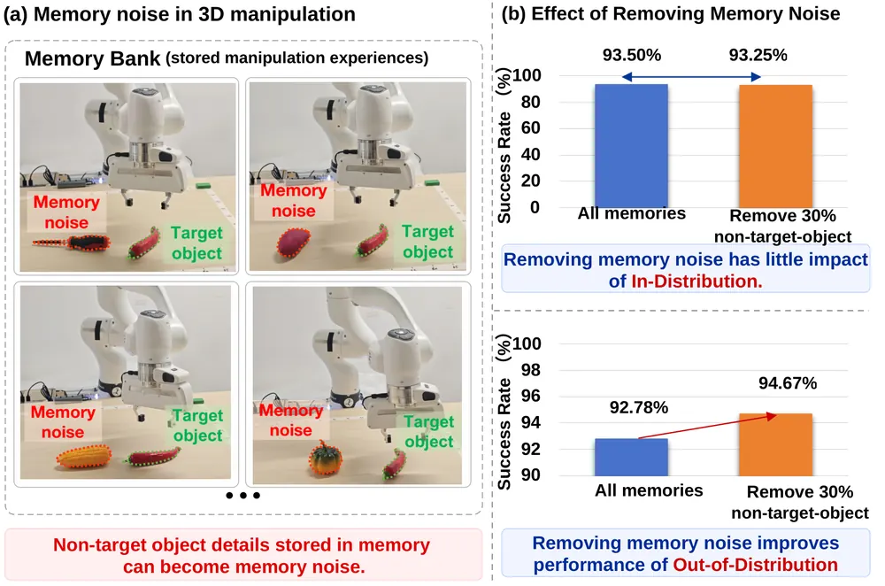
무슨 문제인가
VLA의 long-horizon 조작을 돕는 외부 memory는 대부분 과거 실행을 그대로 저장하는 episodic memory임. 3D 장면에서는 저장된 경험에 대상이 아닌 물체, 배치, 로봇 상태 같은 세부가 함께 들어가 검색을 방해함(저자들은 이를 memory noise라 부름). 저자들의 이전 방법 ECHO(subgoal 단위 계층형 episodic memory)에서 대상 물체와 subgoal이 같은 중복 경험 30%를 지우자 LIBERO-Long(시뮬레이션 다단계 조작 과제 모음) 분포 밖 성공률이 92.78%에서 94.67%로 오름. 경험을 쌓기만 하고 과제 사이에 통하는 원칙을 뽑지 않으면 다른 과제로 옮겨 쓰기 어렵다는 것이 출발점임.
어떻게 푸나
HiMEM(Hippocampus-Inspired Memory)은 해마가 개별 경험을 빠르게 저장하고 신피질이 공통 지식을 천천히 모은다는 complementary learning systems 이론을 본뜬 long-term memory임. 먼저 Qwen2-VL-7B가 실행 영상을 subgoal 단위로 자르고, 각 조각은 VLA hidden state에서 Lorentz(hyperbolic) 공간 벡터로 바뀌어 과제, subgoal, 동작 순의 계층 트리에 들어감. 다음으로 VLM이 조건이나 결과가 다른 경험들의 영상을 비교해 '조건, 동작, 성공확률' 규칙(meta-semantic memory)을 만들고, 성공확률은 검증된 성공·실패 횟수에 Beta prior를 붙여 추정함. 규칙이 생기면 SCDP(semantic-conditioned diversity-preserving pruning)가 조건·동작·결과가 같은 경험 묶음에서 대표 경험만 남기고 나머지를 지우며, 드문 실패와 조건 경계 사례는 보호함. 실행 중에는 현재 hidden state로 트리를 검색해 성공 경험을 고르고, 맞는 규칙의 성공확률로 각 후보의 가중치를 키우거나 줄이거나 아예 막음. 가중 평균한 memory 벡터는 short-term 상태와 합쳐져 residual로 바뀌고, π0에서는 Action Expert 입력 token에 더해짐.
결과
- LIBERO(시뮬레이션 조작 benchmark) 4개 suite(Spatial·Object·Goal·Long) 평균 성공률이 π0 91.88%에서 98.20%로, π0.5 95.05%에서 98.70%로, OpenVLA-OFT 96.80%에서 98.95%로 오름. 저자들의 이전 방법 ECHO와의 차이는 backbone에 따라 0.57에서 1.17퍼센트포인트임.
- LIBERO-Long에서 π0 + HiMEM은 95.30%이고 ECHO는 93.48%임. 실패 경험을 빼면 89.33%, 경험 간 규칙 통합 없이 local 통계만 쓰면 93.75%로 내림.
- LIBERO-Long 전체 경험 pool에서 HiMEM은 pruning 후 1665개 segment로 95.25%를 얻고, ECHO는 2769개 segment로 93.50%임. 트리 검색 지연은 5.6ms 대 6.1ms임.
- 실제 Franka 로봇에서 memory에 없던 조합 과제 5개(과제당 20회)의 평균 성공률이 backbone 37.0%, ECHO 47.0%, HiMEM 61.0%임. 기본 과제 3개 평균은 backbone 58.3%, ECHO 70.0%, HiMEM 78.3%임.
한계
실로봇 평가는 기본 과제 3개와 조합 과제 5개를 과제당 20회 돌린 것뿐이고, 코드 공개 여부는 본문에서 확인 불가함. pruning 비율만 바꾼 실험에서는 42.8%를 지우면 성공률이 95.3%에서 94.0%로 내리는데, 비슷한 비율로 줄인 memory-scale 실험에서는 95.25%로 나와 두 표의 관계가 설명되지 않음. 규칙 생성은 subgoal 단위로 검증된 성공·실패 기록과 따로 모은 실패 시연에 기대며, 경험이 적은 새 장면에서는 규칙의 통계 근거가 부족함.
누리랩 연구와의 연결
- 성공·실패 경험을 규칙의 성공확률로 요약해 검색 후보의 가중치를 정하고 위험한 동작을 막는 구조임. robot memory와 failure recovery 연구에서 실패 기록을 policy 조건으로 쓰는 비교 대상이 됨.
- memory 크기를 줄이는 pruning과 과제 간 경험 재사용을 함께 다루므로, long-horizon VLA memory 연구의 baseline 후보로 쓸 수 있음.
8
66점
SURE:Spatiotemporal Uncertainty Representation for Efficient Vision-Language-Action Learning
VLA
relevance 10/10
ICLR 양식 (추정)
Robotics (cs.RO)
VLA가 시연의 정확한 자세와 타이밍을 그대로 따라 하게 하는 대신, 이웃한 action 값을 함께 다루는 확률 decoder와 속도 차이를 허용하는 Soft-DTW loss로 학습시킴. LIBERO 4개 suite 평균 성공률이 같은 10k step 학습에서 OpenVLA-OFT의 87.1%보다 높은 97.0%임.
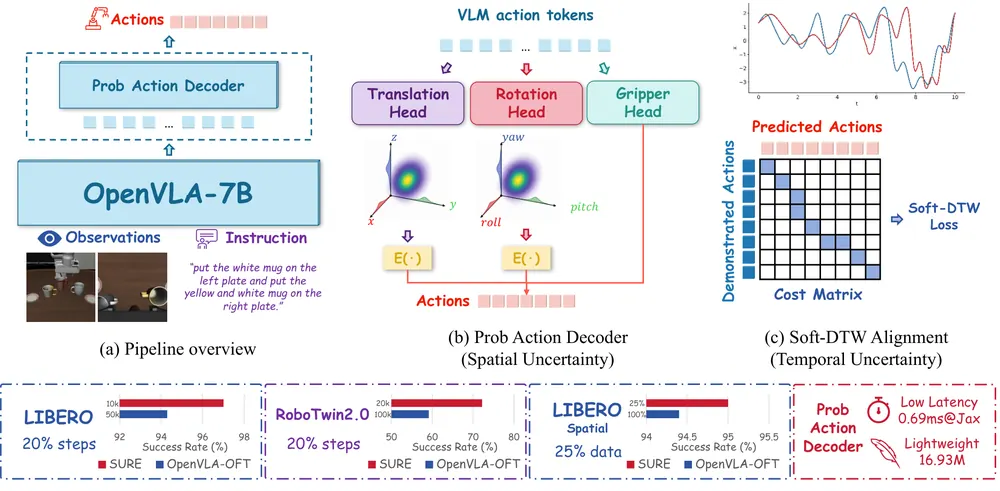
무슨 문제인가
VLA는 demonstration이 많아야 잘 동작하는데, 실로봇 demonstration은 모으기 느리고 비싸며 noise가 섞임. 조작 과제에서는 조금 다른 자세나 궤적으로 접근해도 성공하고, 같은 의도의 시연도 operator마다 속도가 다름. 그런데 L1·L2 같은 프레임별 regression loss는 시연 action 하나하나를 정확한 정답으로 다루므로, 의미상 맞는 예측도 시연자의 자세나 타이밍과 어긋나면 큰 penalty를 받음. 기존의 bin·heatmap·voxel 분포 방식은 공간 쪽 불확실성만 다루고, 시간 쪽은 여전히 step마다 정확히 맞추게 함.
어떻게 푸나
SURE(Spatiotemporal Uncertainty Representation)는 OpenVLA-7B backbone에 확률 action decoder를 붙이고, 학습 loss에 시간 정렬 항을 더한 학습 방식임. 입력은 카메라 영상, proprioception, 언어 지시이고, backbone이 낸 action token을 decoder가 길이 k의 action chunk로 바꿈. decoder는 translation과 rotation의 각 축을 256개의 순서가 정해진 bin으로 나누고 transposed convolution으로 bin별 logit을 만듦. convolution의 가중치 공유로 이웃한 bin이 비슷한 점수를 받고, softmax 확률의 기댓값을 연속 action으로 쓰며, gripper는 작은 MLP가 따로 예측함. 학습에서는 기댓값 action에 L1 loss를 주고 시연 중심 이산 Gaussian과의 KL을 0.05 가중치로 더함. 시간 쪽은 예측과 시연 chunk를 누적 궤적으로 바꿔 Soft-DTW(미분 가능한 dynamic time warping) divergence로 비교해 step이 조금 밀려도 정렬해 맞추고, chunk 끝점 L1 loss로 최종 진척은 맞춤.
결과
- LIBERO(시뮬레이션 조작 benchmark, Spatial·Object·Goal·Long 4개 suite)의 평균 성공률이 10k step 학습한 SURE에서 97.0%임. 같은 backbone의 OpenVLA-OFT는 10k step에서 87.1%, 50k step에서 94.3%임. SURE와 OFT는 단일 seed 평가이고, 나머지 baseline 수치는 다른 논문에서 가져옴.
- LIBERO-Spatial에서 10k step으로 고정하고 학습 시연 비율만 바꾼 비교에서, 시연 25%로 학습한 SURE가 95.0%로 전체 데이터 OpenVLA-OFT의 94.4%보다 높음. 시연 10%에서는 SURE 93.8%, OpenVLA-OFT 72.4%임.
- LIBERO-Spatial ablation에서 성공률이 전체 99.0%에서 Soft-DTW를 빼면 97.4%, 확률 decoder를 빼면 96.8%, 둘 다 빼면 94.4%로 내림.
- 실제 LeRobot SO-101 팔의 탁상 과제 6개(과제당 시연 50개, 6개 과제를 한 checkpoint로 학습)를 과제당 20회 평가함. 평균 성공률이 SURE(20k step) 57.5%, OpenVLA-OFT(50k step) 41.7%임. Pour Water에서는 SURE가 40%로 OpenVLA-OFT의 55%보다 낮음.
한계
LIBERO 비교와 데이터 비율 실험은 단일 seed이고, 99.0% 대 94.4%처럼 이미 높은 구간에서 나온 차이임. 기댓값 decoding은 분포가 여러 봉우리를 가져도 평균 하나를 내므로, 다봉 분포가 실제 행동 선택에 쓰이는지는 보이지 않음. ActionMap 같은 다른 분포형 action head와 직접 비교하지 않았고, 실로봇 실험은 과제 6개에 과제당 20회이며 코드 주소는 본문에 없음.
누리랩 연구와의 연결
- VLA fine-tuning에서 backbone은 그대로 두고 action head와 loss만 바꿔 같은 데이터로 성공률을 올린 사례임. Soft-DTW loss는 head와 따로 떼어 다른 VLA 학습에도 붙여 볼 수 있음.
- decoder가 축마다 256-bin 확률 분포를 내므로, 분포의 퍼짐을 failure detection이나 test-time 행동 선택 신호로 쓸 수 있는지 시험할 여지가 있음. 논문은 이 쓰임을 실험하지 않음.
9
66점
Auditing Grasp Feasibility Predictors with Planner-Verified Counterfactuals
Manipulation
relevance 7/10
WACV 2027 채택
Robotics (cs.RO)
grasp 자세는 그대로 두고 접근 경로에 장애물을 넣어 planner label만 뒤집는 counterfactual 시험으로 grasp feasibility predictor 8종을 점검함. 원래 benchmark에서 AUROC 0.920~0.996이던 predictor가, 같은 자세 쌍을 비교하는 CF-pair AUROC에서는 모두 0.470~0.504로 우연 수준에 머묾.
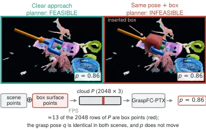
무슨 문제인가
TAMP(task and motion planning)에서는 학습된 predictor가 grasp마다 motion planning이 성공할지(feasibility)를 미리 맞혀 planner 호출을 줄임. 이런 predictor는 point cloud benchmark에서 거의 완벽한 정확도를 보고함. 그런데 자연스럽게 뽑은 grasp에서는 grasp 자세만으로 label을 거의 맞힐 수 있음. 장면 정보 없이 grasp 자세의 최근접 이웃 25개만 보는 lookup도 기존 충돌 예측 모델 SceneCollisionNet의 benchmark 과제에서 AUROC 0.963을 냄. 그래서 높은 benchmark 점수가 predictor가 planner처럼 충돌 기하를 읽는다는 근거가 되지 못함.
어떻게 푸나
corridor insertion은 feasible한 grasp 하나의 자세를 고정하고, gripper가 들어오는 10cm 접근 통로에 한 변 1.5~5cm 상자를 넣는 편집임. 상자 표면 점을 모델 입력 point cloud에 더하고, RRT-Connect planner를 다시 돌려 새 label을 얻음. 그러면 같은 자세에서 막히지 않은 장면과 막힌 장면의 쌍이 생기고, 두 장면의 차이는 충돌 여부 하나뿐임. CF-pair AUROC는 이 쌍에서 막히지 않은 쪽을 더 feasible하다고 순위 매기는지 재는 값이고, 자세만 보는 모델은 0.5를 넘을 수 없음. 장애물은 구, L자, 탁자 위 기둥, 실제 benchmark 물체 등으로 바꾸고, planner 4종과 팔 2종(Franka Panda, xArm6)으로도 label을 다시 확인함. 저자는 대안으로 장면 점을 통로 축을 따라 13개 slab으로 나눠 slab마다 최소 횡방향 거리(clearance)를 token으로 만드는 parameter 약 2만 3천 개짜리 모델을 원래 benchmark에서 학습시킴.
결과
- GraspNet-1B(실제 RGB-D 탁자 장면 190개) 기반 benchmark에서 predictor 8종의 원래 AUROC는 0.920~0.996임. 같은 자세 counterfactual 쌍 1,065개에서는 CF-pair AUROC가 0.470~0.504로 내려감. 기존 benchmark 저자가 공개한 point transformer 기반 분류기 GraspFC-PTX는 장애물이 있든 없든 점수 변화가 0.001 이하임.
- 상자를 넣으면 planner 4종과 팔 2종의 8개 조건 모두에서 label이 100% 뒤집힘. 통로에서 30cm 떨어진 같은 상자는 98.0%의 grasp를 feasible로 남김. 실제 benchmark 물체를 장애물로 쓴 150쌍에서도 GraspFC-PTX의 점수 변화는 0.001임.
- 저자가 공개한 가중치를 원래 데이터에서 돌린 결과, 기존 plan feasibility 예측 모델 PIGINet은 자체 PR2 주방 장면에서 막힌 집기의 90%를 feasible로 판정함(정답은 0%). SceneCollisionNet은 겹침부터 6cm 틈까지 옮겨도 충돌 확률이 0.76에 머묾.
- counterfactual 장면 없이 원래 benchmark만으로 학습한 clearance token 모델은 CF-pair AUROC 0.983을 냄. 같은 점을 그대로 넣은 모델은 0.843, 자세만 쓴 모델은 0.503임.
한계
모든 label이 PyBullet 시뮬레이션의 sampling 기반 planner에서 나오고, 실로봇 실험은 없음. clearance token 모델도 학습한 장애물 배치에 묶여 있어, 학습 때 없던, 통로 축 위에 장애물을 놓는 배치에서는 AUROC가 0.74로 내려감. 배치가 바뀌어도 통하는 clearance 표현은 저자도 풀지 못한 문제로 남김.
누리랩 연구와의 연결
- 자세는 고정하고 장애물 하나만 넣어 planner로 label을 다시 매기는 방식은 counterfactual reasoning 연구의 평가 틀로 쓸 수 있음. failure detection에서 VLA나 world model이 장면 기하를 실제로 쓰는지 점검할 때 그대로 옮겨 쓸 수 있음.
- 공개된 counterfactual 쌍과 relabeling pipeline은 TAMP용 feasibility 예측이나 manipulation 실패 예측 모델을 만들 때 planner 없이 바로 돌리는 점검 세트로 쓸 수 있음.
10
66점
BEV3SR: Evidence-Aware 3D Spatial Reasoning from Video
Embodied AI
relevance 6/10
WACV 채택
Computer Vision and Pattern Recognition (cs.CV)
RGB-D 영상을 물체 단위 metric BEV(위에서 내려다본 바닥 평면 지도) memory로 바꾸고, 질문마다 기하 계산으로 풀지 영상 frame을 골라 VLM에 보일지 나누는 training-free 방법임. 같은 Qwen3-VL-8B와 16 frame 조건에서 SQA3D 정답률(EM)이 51.6에서 62.6으로 오름.
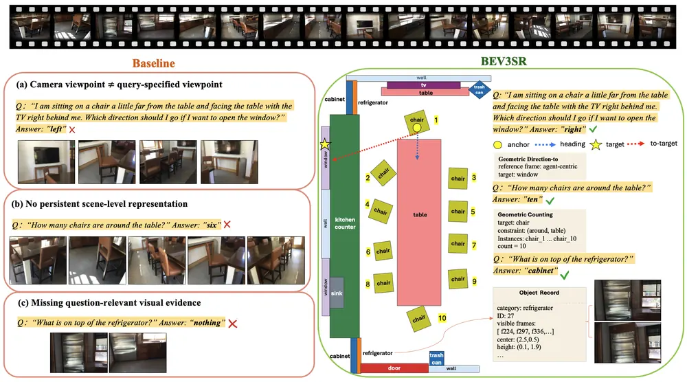
무슨 문제인가
VLM이 영상으로 3D 장면 질문에 답할 때는 몇 장의 frame만 보므로 방 전체를 metric 좌표로 기억하는 표현이 없음. 그래서 여러 frame에 걸친 물체를 세거나 위치를 비교하기 어려움. 질문이 '내 왼쪽'처럼 질문자 기준으로 정해져도 VLM은 카메라 화면의 왼쪽으로 답하는 일이 잦음. 또 frame 수가 제한되어 있어 작거나 가려진 물체처럼 답에 필요한 장면이 입력에서 빠질 수 있음.
어떻게 푸나
BEV3SR(BEV 기반 3D Spatial Reasoning)의 입력은 RGB-D 영상과 카메라 intrinsics·pose이고 출력은 질문의 답임. 먼저 frame마다 Mask2Former로 물체를 분할하고 depth로 world 좌표에 올린 뒤 바닥 평면 BEV grid에 투영함. 여러 frame에 나온 같은 물체를 graph로 묶어 label, 위치, 크기, 높이 범위, 그 물체가 보인 frame 목록을 담은 물체 기록을 만듦. 다음으로 STF(Spatial Task Formalizer)가 질문을 기준 좌표계, 과제 종류, 공간 제약, 필요한 증거 종류로 바꿈. 기하로 풀 수 있는 질문은 GR(Geometric Reasoner)이 맡음: 질문자 위치 후보와 벽 방향에서 뽑은 heading 후보 중 질문의 방향 조건을 가장 많이 맞추는 쌍을 고름. 그 좌표계에서 물체 기록으로 세기·거리·방향을 계산함. 나머지 질문은 VEA(Visual Evidence Aligner)가 관련 물체가 보인 frame과 주변 맥락 frame을 16장 안에서 골라 VLM에 넘김.
결과
- SQA3D(질문자의 위치·방향 설명이 붙은 3D 장면 QA) test EM이 Qwen3-VL-8B에서 51.6에서 62.6으로 오름. InternVL3.5-8B는 52.9에서 61.2로, LLaVA-OneVision-1.5-8B는 49.2에서 60.3으로 오름. 비교 대상은 같은 backbone에 RGB frame 16장을 균일하게 넣은 것이라 depth·pose 입력은 BEV3SR만 씀.
- 기하로 풀 수 있는 SQA3D validation 질문에서 BEV 물체 ID와 label을 글로 넣어 주기만 하면 EM이 43.2에서 41.7로 내림. GR로 직접 계산하면 65.5로 오름.
- 학습한 3D 모델과 비교하면 SQA3D test EM 62.6으로 LLaVA-3D 60.1, GPT4Scene 59.4보다 높음. ScanQA(3D 장면 물체 QA) val CIDEr는 95.6으로 LLaVA-3D 103.1, Video-3DLLM 102.1보다 낮음.
- 센서 depth·pose 대신 RGB에서 기하를 추정하는 모델 MapAnything의 출력을 쓰면 SQA3D validation EM이 61.3에서 56.5로 내림. 그래도 RGB baseline 51.0보다는 높음.
한계
질문자 좌표계가 위치 1 m, 방향 30도 이내로 맞을 때 EM은 76.97이고 둘 다 틀리면 51.15로 내려, GR은 좌표계 추정 정확도에 크게 기댐. 실험은 정적 실내 장면 QA benchmark뿐이고 로봇이 움직이며 memory를 갱신하는 상황은 보이지 않음. 원문에 코드 공개 주소는 없음.
누리랩 연구와의 연결
- 물체 기록마다 보인 frame을 연결해 두고 질문에 따라 기하 계산과 이미지 검색을 나누는 구조라, scene graph·semantic mapping 기반 robot memory를 VLM 질의와 잇는 설계로 참고할 수 있음.
- 질문자 기준 방향을 heading 후보 탐색으로 정하는 방식은 VLN이나 manipulation 지시에서 '내 왼쪽' 같은 표현을 푸는 embodied spatial reasoning에 바로 옮길 수 있음.
11
64점
HaNDF: Object-Conditioned Geometric Neural Hand Distance Fields
Manipulation
relevance 8/10
NeurIPS 2026 채택
Computer Vision and Pattern Recognition (cs.CV)
손 자세의 그럴듯함을 물체마다 다른 거리장으로 배우고, 틀린 손 자세를 거리값이 0에 가까워지는 방향으로 반복해 옮겨 고침. HOI4D에서 EasyHOI의 손 관절 위치 오차(MPJPE)를 17.06mm에서 14.33mm로 낮춤.
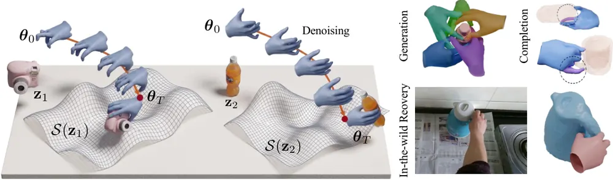
무슨 문제인가
사진 한 장에서 복원한 손은 손 모양은 맞아도 쥔 물체와 맞지 않는 경우가 많음. 손가락이 물체에서 떠 있거나, 물체를 뚫고 들어가거나, 관절이 불가능한 방향으로 돌아감. PoseNDF, NRDF 같은 기존 neural distance field(NDF: 자세에서 그럴듯한 자세 집합까지의 거리를 내는 네트워크) prior는 몸 자세용이고 물체를 입력으로 받지 않음. 반대로 물체를 조건으로 받는 grasp 생성 모델은 관절 회전을 Euclidean 공간에서 다뤄서 자세 사이 거리가 기하학적 뜻을 갖지 못함.
어떻게 푸나
HaNDF(Hand Neural Distance Field)는 MANO 손 모델의 손가락 관절 15개 회전을 각각 unit quaternion으로 두고, 15개를 묶은 product manifold 위에서 자세를 다룸. 물체는 DeepSDF auto-decoder가 만든 64차원 shape code 하나로 넣음. 입력은 손 자세와 물체 code이고, 출력은 그 물체를 쥐는 가장 가까운 그럴듯한 자세까지의 geodesic 거리 추정값 하나임. 네트워크는 관절 token 15개, 물체 token 1개, 거리 집계용 token 1개를 넣는 4층 transformer임. 거리값이 0이 되는 자세 집합이 그 물체에 맞는 손 자세 집합이 됨. 고칠 때는 거리장의 gradient를 quaternion manifold의 접평면으로 사영하고, 예측 거리에 비례한 보폭으로 exponential map을 따라 이동하는 과정을 되풀이함. 같은 거리장 하나로 노이즈 제거, 빠진 관절 채우기, 무작위 자세에서 출발하는 grasp 생성, 이미지 복원 결과 보정을 다시 학습하지 않고 수행함.
결과
- 이미지 기반 손 복원 보정(물체 정답 형상을 모든 방법에 줌)을 HOI4D(egocentric RGB-D 손-물체 상호작용 데이터)에서 잼. 단일 이미지 손-물체 복원 방법 EasyHOI의 MPJPE가 17.06mm에서 14.33mm로, 손 표면 정점 오차(MPVPE)가 16.64mm에서 13.98mm로 내림. SDF 기반 복원 방법 AlignSDF에 붙이면 같은 데이터에서 MPJPE가 10.60mm에서 10.43mm로 내려 개선 폭이 작음. OakInk(다시점 RGB 손-물체 상호작용 데이터)에서 AlignSDF의 손-물체 겹침 부피는 0.82cm³에서 0.87cm³로 오히려 늘어남.
- 빠진 손가락 채우기(HOI4D, 손가락 하나의 관절 3개를 가리고 나머지 12개는 정답으로 줌): 가린 관절의 회전 오차가 가장 강한 baseline인 H-NRDF(NRDF를 손에 옮긴 무조건부 거리장)의 16.60°에서 12.57°로 내림.
- 물체 조건이 실제로 쓰이는지 확인(HOI4D, 노이즈 0.8rad, 처음 보는 물체): 회전 오차가 HaNDF 5.52°, 다른 범주의 틀린 물체를 넣으면 5.80°, 물체 token을 빼고 다시 학습하면 6.10°임. 손 정점 오차는 각각 6.58mm, 7.05mm, 7.40mm임.
- 물체 조건 grasp 생성(HOI4D): 같은 1000 step에서 기존 물체 조건 손 자세 생성 모델 LatentHOI는 FID 2.78, 샘플당 64.5ms이고 HaNDF는 FID 0.53, 샘플당 59ms임. 200 step으로 줄이면 FID 0.55, 12ms임.
한계
저자가 밝힌 대로 물체 형상이 어느 정도 정확하다고 가정하며, 손과 물체를 함께 다루는 거리장이 아니라 물체를 조건으로 둔 손 거리장임. 이미지 복원 비교는 모두 물체 정답 형상을 넣은 조건이라, 물체를 모르는 실제 상황의 성능은 AlignSDF가 예측한 물체 형상을 넣은 HOI4D 실험 하나로만 보임. 실험은 정적 grasp 자세 데이터셋에 한정되고 로봇 손 retargeting이나 실로봇 실험은 없으며, 많은 결과에 error bar가 없음.
누리랩 연구와의 연결
- 물체 shape code를 조건으로 쓰는 자세 거리장은 dexterous manipulation에서 사람 시연 손 자세를 정리하거나 로봇 손 grasp 후보를 고르는 prior로 쓸 수 있음.
- 예측 거리값이 '이 손 자세가 이 물체에 그럴듯한가'를 바로 내므로, grasp 단계의 failure detection 점수나 test-time optimization 목적 함수로 옮겨 볼 만함.
12
64점
Localizing and Editing the Goal Representation of a Vision-Language-Action Model
VLA
relevance 8/10
CoRL 2026 채택
Robotics (cs.RO)
OpenVLA가 "X 하지 마" 지시에도 금지된 과제를 수행하는지 재고, goal이 몇 번째 layer에 표현되는지 activation patching으로 찾음. 부정 지시 rollout의 79%에서 금지된 과제를 수행했고, 고정 steering vector로 goal을 바꾼 것은 layer 8 편집뿐이었음.
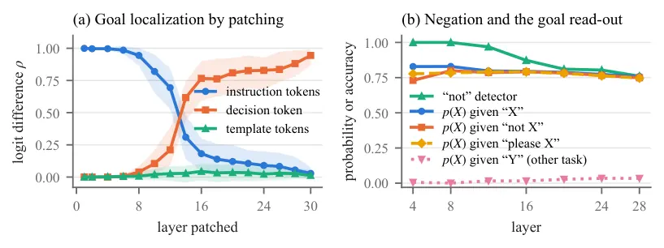
무슨 문제인가
작업자가 로봇에 거는 안전 제약은 "그릇을 스토브에 올리지 마" 같은 금지 문장인 경우가 많음. VLA가 이런 부정 표현을 무시하면 금지된 과제를 실패 없이 잘 해내므로, 지시한 과제가 실패할지를 예측하는 기존 runtime monitor로는 잡히지 않음. 그런데 VLA 내부에서 실행할 goal이 어디에 표현되는지, 그 표현을 고쳐서 행동을 바꿀 수 있는지는 밝혀지지 않았음.
어떻게 푸나
LIBERO-Goal(한 장면에서 서로 다른 과제 10개를 지시로 고르는 시뮬레이션 조작 benchmark)에 fine-tuning된 OpenVLA-7B를 분석함. 매 step마다 10개 과제의 symbolic goal predicate를 검사해, 각 rollout이 실제로 수행한 goal(executed goal)에 이름표를 붙임. activation patching은 과제 c의 화면에서 Llama-2 residual stream의 일부 위치를 다른 과제 d의 값으로 덮어씀. 위치는 instruction token, template token, 마지막 prompt token인 decision token으로 나누고, 첫 action token이 얼마나 d 쪽으로 옮겨 가는지 잼. 편집 방법은 decoding 전에 한 번 덮어쓰는 prefill patch, 생성되는 모든 action token까지 덮어쓰는 decode-stream patch, 다른 episode에서 구한 고정 steering vector를 더하는 방식으로 나눔. monitor는 decision token 표현에 linear goal probe를 학습하고, 허용되지 않은 goal의 확률이 허용된 goal보다 높으면 점수가 오르게 만듦. 경보 기준은 따로 떼어 둔 정상 rollout의 점수 분위수로 정하는 split-conformal 방식으로 정해 정상 rollout의 오경보율을 α 이하로 묶음.
결과
- 부정 지시 120회 중 95회(79%)에서 금지된 과제를 수행했고 나머지 25회는 아무 goal에도 이르지 못함. 같은 과제·초기 상태 92쌍에서 금지 과제 수행은 76회, 일반 지시 성공은 81회로 차이가 유의하지 않음(McNemar p=0.30).
- patching 결과 layer 12와 16 사이에서 goal 정보가 instruction token에서 decision token으로 옮겨 감. 첫 action에 대한 instruction token의 기여(정규화 logit 차이)는 layer 8에서 0.94, layer 16 이후 0.18로 내려감. decision token의 기여는 layer 8에서 0.04, layer 16 이후 0.77로 오름.
- layer 8 instruction token에 고정 steering vector를 더하면 closed-loop 18회 중 12회가 다른 과제로 바뀜. layer 12~20의 고정 벡터와 prefill patch는 158회 중 0회였고, decode-stream patch만 layer 24에서 18회 중 15회를 바꿈.
- 실행 중 지시를 바꾼 상황에서, 같은 과제 쌍 안의 비준수 탐지 AUROC가 layer-32 goal probe 0.88, 과제 성공 여부를 예측하는 success probe 0.74, action entropy 0.59임. 모델 내부를 쓰지 않는 DINOv2 이미지와 지시 단어 기반 probe도 0.87로 비슷함.
한계
VLA 하나와 시뮬레이션 장면 하나만 썼고, 금지 대상은 위험한 행동이 아니라 같은 장면의 무해한 과제 하나 전체임. 대부분의 closed-loop 편집은 과제 쌍 3개에서 18회뿐이라 18회 중 0회라는 결과로도 실제 성공률이 최대 18%일 가능성을 95% 신뢰구간에서 배제하지 못함. 부정 지시 상황에서 goal monitor는 금지를 지킨 rollout 25개에도 모두 경보를 내서 "not" 키워드 규칙보다 나을 게 없었음. 실로봇 실험은 없음.
누리랩 연구와의 연결
- failure detection 연구에서 "지시한 과제가 실패했는가"와 "금지된 과제를 잘 해냈는가"는 다른 문제임을 수치로 보여 줌. 명세와 실행 goal을 비교하는 monitor를 VLA failure detector의 비교 기준으로 쓸 수 있음.
- autoregressive VLA를 activation steering으로 고칠 때 어느 layer와 어느 token에 가해야 하는지 알려 주는 사례임. test-time 개입이나 counterfactual 지시 실험을 설계할 때 참고 기준이 됨.
13
62점
Seeing What Execution Needs: Benchmarking Task-Conditioned Actionable Spatial Belief for Manipulation
Embodied AI
relevance 9/10
Robotics (cs.RO)
같은 작업대에서도 명령마다 실행에 필요한 시점(view)이 다르다는 점을 재는 시뮬레이션 조작 benchmark를 만듦. 후보 RGB 12장을 모두 미리 본 VLM 7개의 성공률은 26.0~42.9%에 그침.
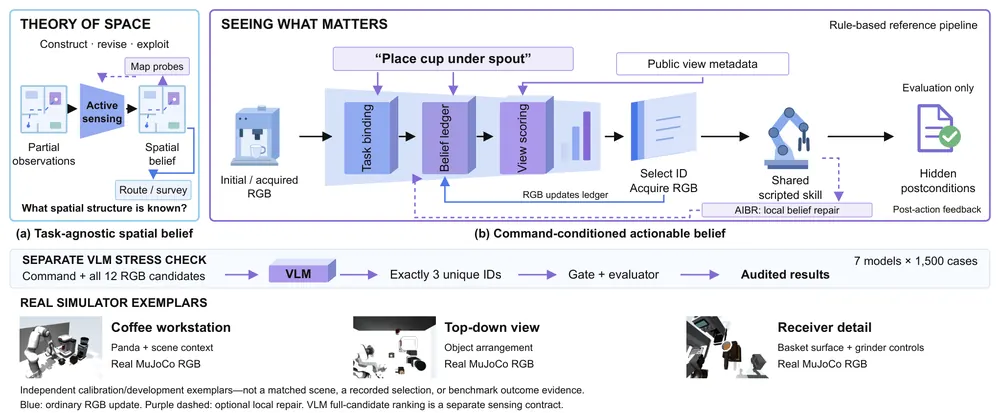
무슨 문제인가
로봇이 같은 장면을 보더라도 명령에 따라 실행에 필요한 증거가 다름. 커피 작업대에서 컵을 놓으려면 컵과 spout의 정렬을 봐야 하고, 원두를 갈려면 hopper, chute, 받는 basket을 봐야 함. 기존 spatial reasoning benchmark는 공간 질문의 답이나 전역 표현을 채점하고, 조작 benchmark는 학습된 policy의 최종 성공만 잼. 최종 성공만으로는 agent가 맞는 증거를 골랐는지, shortcut에 기댔는지, controller 덕분에 성공했는지 가를 수 없음.
어떻게 푸나
benchmark는 MuJoCo 탁상 장면에서 장면, 후보 시점, 실행 skill을 고정하고 명령과 관측 예산 H(실행 전 고를 수 있는 시점 수)만 바꿈. 각 사례는 명령 하나, 미리 렌더링해 고정한 후보 RGB 시점(커피 12장, 서랍과 전자레인지 10장), 공용 scripted skill, 숨은 성공 조건으로 이루어짐. 숨은 성공 조건(hidden postcondition)은 실행 뒤 simulator 상태로만 판정하며 선택기에는 보이지 않음. 평가는 두 가지임: C.1은 H=5에서 시점을 하나씩 고르는 closed-loop 평가이고, C.2는 같은 물체에 명령만 바꿔 필요한 기능 증거를 달리하는 functional OOD 평가(H=3)임. 저자가 함께 낸 기준 선택기에서 Spatial-Functional Belief Ledger는 명령에 필요한 predicate(부품 가시성, 상대 자세, 지지, 기능 상태 등)의 값과 확신도를 적음. 규칙 기반 View Belief Map(VBM)은 아직 확인 안 된 predicate를 많이 풀 것 같은 후보 시점에 높은 점수를 줌. 이 점수는 학습한 값이 아니라 시점 종류와 부품 coverage 같은 공개 metadata로 계산함. 실행 결과가 예측과 다르면 틀린 항목만 다시 보게 하는 AIBR(Action-Induced Belief Revision)을 선택적으로 붙임.
결과
- 커피 작업대 5개 과제의 C.1(H=5) 평균 성공률은 VBM+AIBR이 98.8%임. 예전에 쓸모 있던 시점을 다시 쓰는 History active는 52.9%, predicate를 저장하지만 시점 점수는 매기지 않는 Target ledger는 12.4%임.
- C.2 functional OOD 평균 성공률은 VBM+AIBR이 98.9%임. 명령과 무관하게 affordance가 보이는 시점을 고르는 baseline은 19.7%, 물체 종류로 고르는 baseline은 3.7%임. ablation에서 ledger의 기능 증거 항목(functional field)을 빼면 0.0%, 명령 binding을 빼면 19.7%로 내림.
- 후보 12장을 모두 미리 보고 3장을 고르는 별도 조건에서 VLM 7개 중 가장 낮은 Sonar Pro가 26.0%, 가장 높은 Grok 4.3이 42.9%임. 모델마다 1,500 사례이며, 기준 선택기는 시점을 하나씩 보고 고르지만 VLM은 12장을 한꺼번에 보고 고르므로 같은 조건의 비교는 아님.
- metadata 대신 frozen CLIP-B/32 feature 위의 linear head로 RGB에서 부품 가시성을 추정해도 C.1 98.5%, C.2 98.9%를 유지함. 후보끼리 이 점수를 뒤섞으면 14.9%와 11.4%로 내려, 결과가 이미지 내용에 의존함을 보임.
한계
실험은 모두 시뮬레이션이고 실로봇 검증은 arXiv comments란에 진행 중이라고만 적혀 있음. 기준 선택기는 시점 이름, 부품 coverage metadata, 손으로 짠 명령 template에 기대며, 주 설정 성공률이 98% 이상이라 거의 포화됨. 처음 1개 시점만 고르는 H=1에서는 VBM+AIBR이 C.1 19.0%, C.2 58.6%로 내림. 코드 공개 주소는 본문에서 확인 불가임.
누리랩 연구와의 연결
- 명령에 따라 어떤 시점을 봐야 하는지를 고정된 skill과 숨은 성공 조건으로 따로 재는 틀이라, active perception/NBV 연구에서 학습된 view 선택기를 평가하는 데 쓸 수 있음. 후보 시점이 고정되어 있어 연속적인 카메라 이동은 다루지 않음.
- 실행 뒤 예측과 관측이 다르면 틀린 belief 항목만 다시 보는 AIBR은 failure detection과 recovery 연구와 이어짐. 일부러 만든 불일치 episode의 98.7%를 다시 성공시켰으나 규칙 기반이고 시뮬레이션 결과임.
14
62점
TouchAnnotator: Multi-Source Tactile Supervision with Privileged-View Distillation
Tactile
relevance 7/10
ByteDance 자체 양식
Computer Vision and Pattern Recognition (cs.CV)
촉각 센서 없이 찍은 1인칭 영상에 양손의 접촉·상대 압력 지도를 자동으로 붙이는 annotator를 만듦. 직접 모은 장갑 측정 영상 860개에서 압력 지도 겹침 지표 Volumetric IoU가 기존 영상 기반 촉각 예측 모델 TouchAnything의 9.10에서 14.12로 오름.
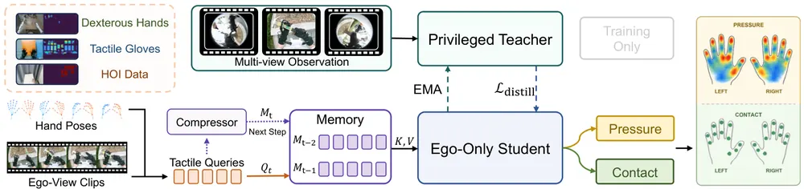
무슨 문제인가
1인칭(egocentric) 영상은 사람의 조작을 대량으로 담지만, 손이 물체 뒤로 가려지면 어디가 얼마나 닿았는지 알 수 없음. 영상에서 압력·접촉을 추정하는 기존 데이터는 장갑 압력, 손 형상에서 계산한 접촉, 로봇 손끝 변형처럼 측정 대상과 센서 배치가 제각각이라 한 모델로 묶기 어려움. 또 촬영 때 손목 카메라가 있어도 실제로 라벨을 붙일 영상에는 1인칭 카메라 하나뿐인 경우가 대부분임.
어떻게 푸나
TouchAnnotator는 1인칭 영상 8프레임과 그 영상에서 손 pose 추정 모델 WiLoR로 추정한 양손 pose를 입력받아, 양손 21×21 격자 위의 상대 압력 지도와 접촉 확률 지도를 출력함. 학습 데이터는 6개 dataset, 3종 embodiment(촉각 장갑, 맨손, 로봇 dexterous hand)를 같은 손 해부학 격자로 옮겨 합침. 각 샘플에서 실제로 측정된 칸과 과제(압력 또는 접촉)만 loss에 쓰는 source-aware mask를 두어, 측정되지 않은 칸을 음성으로 학습하지 않게 함. 학습 중에는 1인칭과 손목 영상을 모두 보는 EMA teacher가 있고, 1인칭 영상만 보는 student가 teacher의 손 주변 query feature와 압력·접촉 출력을 따라 배움(privileged-view distillation). 직전 두 clip을 clip당 16개 token으로 압축한 memory를 현재 query가 읽어 시간 맥락을 얻음.
결과
- 직접 모은 장갑 측정 영상 860개(21개 과제)에서 TouchAnything과 같은 기준으로 비교함. 접촉 여부의 frame 단위 정확도(temporal accuracy)가 63.29%에서 68.67%로, Volumetric IoU가 9.10에서 14.12로 오름. 전체 MAE는 0.0830에서 0.0875로 조금 나빠짐.
- EgoTouch(장갑 압력이 달린 1인칭 조작 영상)의 처음 보는 물체 76개 episode에서 같은 checkpoint에 손목 영상을 더 주면 Contact IoU가 0.4779에서 0.5038로 오름. 1인칭 영상의 가림이 실제로 정보를 잃게 한다는 진단 결과임.
- FPHA(맨손 1인칭 조작 영상, 형상에서 계산한 접촉 라벨)에서 추가 학습 없이 F1 0.3658을 얻음. 맨손 접촉 전용 모델 HACO의 0.3768과 비슷하고, 같은 pose 입력을 받는 TouchAnything의 0.1209보다 높음.
한계
출력은 보정된 힘이 아니라 센서 상대값이고, 로봇·장갑·맨손 사이의 크기 비교는 정성 그림으로만 보임. 부록의 ablation은 학습 데이터 비율과 초기화가 함께 바뀌어 distillation과 memory 각각의 효과를 분리하지 못한다고 저자가 직접 밝힘. 현재 8프레임 clip 안에서는 뒤쪽 frame까지 보고 추정하므로 실시간이 아닌 오프라인 라벨링용이고, 이 라벨이 실제 policy 학습을 개선하는지는 실험하지 않음.
누리랩 연구와의 연결
- 촉각 센서 없는 사람 조작 영상에 접촉·압력 라벨을 붙이는 도구임. tactile 신호를 쓰는 VLA나 manipulation policy를 사람 영상으로 사전학습할 때 pseudo-label 생성기로 쓸 수 있음.
- 학습 때만 있는 손목 시점을 teacher로 쓰는 구조는, active perception에서 추가 시점이 주는 정보량을 재는 실험 설계로 옮겨 쓸 수 있음.
15
60점
Horizon-Coupled Obstacle Guidance for Relative-Action Diffusion Policies
Manipulation
relevance 7/10
ICRA·IROS·RA-L 계열 양식 (추정)
Robotics (cs.RO)
장애물 없이 학습한 diffusion policy를 다시 학습하지 않고, denoising 중에 장애물 회피 gradient를 action chunk 전체에 나눠 주어 우회 경로를 만들게 함. 실로봇 7개 장애물 시나리오에서 충돌 없는 과제 성공이 140회 중 8회에서 105회(75.0%)로 오름.
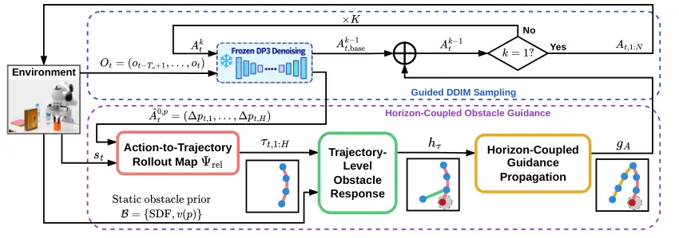
무슨 문제인가
Diffusion policy는 demonstration에 없던 장애물이 배치 현장에 놓이면 학습한 경로 그대로 움직여 부딪힘. 장애물마다 demonstration을 다시 모으거나 policy를 다시 학습하는 것은 비용이 큼. 기존 policy 수준 guidance(Lan-o3dp, EmbodiSteer)는 action chunk의 각 step을 따로 장애물 밖으로 밀어냄. 이렇게 하면 한 지점의 충돌은 피해도 장애물을 돌아 목표로 이어지는 하나의 우회 경로가 만들어지지 않음.
어떻게 푸나
기반 policy는 point cloud와 로봇 상태를 받아 16 step action chunk를 내는 DP3(3D Diffusion Policy)이고, 가중치는 고정함. 이 policy는 end-effector 위치를 절대 좌표가 아니라 직전 목표에서의 변위(relative action)로 출력함. DDIM의 매 denoising step에서 현재 clean action 추정치의 변위를 차례로 더해 workspace 상의 end-effector 궤적을 만듦. 궤적의 각 점과 점 사이 보간점에서 SDF(signed distance field, 장애물 경계까지의 부호 있는 거리)로 침투 깊이를 재고, 침투 깊이의 제곱을 cost로 둠. i번째 위치는 1번부터 i번째까지의 변위를 모두 더한 값이므로, j번째 변위에 주는 guidance는 j번째 이후 모든 위치의 장애물 응답을 합한 값이 됨. 이 horizon-coupled guidance를 위치 성분에만 더하고, 회전과 gripper 명령은 policy 출력 그대로 둠. 장애물 위치와 모양은 사람이 손으로 재서 미리 넣음.
결과
- Franka 로봇의 pick-and-place 장애물 배치 4종(직사각형 1개, 좁은 통로 2개, 장애물 3개, 4개)에서 충돌 없는 과제 성공이 80회 중 54회임. 절대 좌표 policy에 Lan-o3dp식 step별 guidance를 붙인 비교군은 4회, guidance 없는 절대 좌표 policy는 2회, relative-action policy는 0회임.
- 장애물 1개 조건의 2×2 ablation에서 성공 횟수(20회 중)는 step별 guidance가 2회(원·타원 envelope)와 4회(SDF), horizon-coupled guidance가 12회와 18회임. guidance 방식의 차이가 장애물 모델 차이보다 크게 나타남.
- guidance 없는 relative-action policy는 장애물 1개 조건에서 0회로, relative action만으로는 성능이 오르지 않음.
- 같은 guidance를 붓기(pouring), 펜 꽂기, 양말을 서랍에 넣고 서랍을 밀어 넣는 과제에 그대로 쓰면 20회 중 각각 20회, 16회, 15회 성공함. Lan-o3dp식 step별 guidance 비교군은 각각 0회, 0회, 4회임.
한계
장애물 형상과 좌표를 사람이 미리 재서 넣어야 하고, 장애물은 정적이며 수평 x-y 평면에서만 다룸. 충돌 검사는 end-effector 기준점 하나에만 해서 팔 링크나 들고 있는 물체의 충돌은 cost에 들어가지 않음. guidance 세기는 시나리오마다 손으로 고르며, 장애물 4개 조건에서는 20회 중 8회 성공에 그침.
누리랩 연구와의 연결
- 고정된 diffusion policy를 inference 시점 guidance로 바꾸는 test-time optimization 사례임. 비용 gradient를 action chunk 전체에 어떻게 퍼뜨리는지가 성능을 가른다는 ablation은 VLA action chunk steering 설계에 참고가 됨.
- 장애물 prior를 사람이 주는 대신 scene graph나 3DGS 같은 지각 결과에서 SDF를 만들어 넣으면 active perception과 이어 볼 수 있음.
오늘의 흐름
- 실패 뒤에 무엇을 바꿀지 정하기: 한 연구는 범용 모델이 코드로 로봇을 직접 움직이며 결과를 보고 계획을 고침. 다른 연구는 실패 진단 결과를 교정용 latent 조건(correction code)으로 묶어 VLA의 action 생성 network 안에 넣고, 또 다른 연구는 사람 개입을 따라 할 정답이 아니라 탐색 방향 신호로 쓰는 online RL을 제안함. On Agentic Manipulation Policies, Toward the Era of Agentic Embodied Intelligence, Q-OIL
- robot memory를 쌓는 방식: VLA의 경험을 '조건, 동작, 성공 확률' 규칙으로 요약해 중복 경험을 지우거나, episode 중 관측으로 world model 가중치를 계속 학습해 기억을 가중치에 담음. 범용 모델에 도구 호출과 코드 실행을 붙인 실행 틀(harness)은 노트와 코드를 쌓아 다음 과제로 넘김. HiMEM, Encoding Memory in World Models, On Agentic Manipulation Policies
- inference 시점 검색과 guidance의 강도: 사람 선호로 학습한 reward의 최고점 후보에 몰아 주는 planner(MPPI)가 true return을 오히려 낮추는 현상을 측정하고, 안전한 검색 강도의 규칙을 증명함. 고정된 diffusion policy에는 장애물 회피 gradient를 action chunk 전체에 나눠 주어 재학습 없이 우회 경로를 만듦. Goodhart in the Planner, Horizon-Coupled Obstacle Guidance
- 모델이 실제로 무엇을 보는지 점검하기: 장애물 유무만 다른 장면 쌍에서 grasp 가능 여부를 가리는 AUROC가 predictor 8종 모두 0.5 안팎에 머물고, OpenVLA는 "X 하지 마" 지시의 79%에서 금지된 과제를 수행함. 명령마다 봐야 할 카메라 시야가 다른 benchmark에서는 VLM 7개의 성공률이 26.0%에서 42.9% 사이임. Auditing Grasp Feasibility Predictors, Localizing and Editing the Goal Representation, Seeing What Execution Needs
- 촉각을 policy와 데이터에 넣기: 시각·촉각 world-action model(관측과 action을 함께 예측하는 모델)에서 각 encoder를 다른 modality를 예측하는 loss로만 갱신해 encoder와 모델을 함께 학습함. 촉각 센서 없이 찍은 1인칭 영상에 접촉·압력 지도를 자동으로 붙이는 도구도 나옴. MDF++, TouchAnnotator
해볼 만한 연구
검색 강도 규칙을 VLA action 후보 선택에 적용하기
- 질문: learned reward 오차가 후보마다 얼마나 다른지로 검색 temperature를 정하는 규칙이, learned reward로 VLA action chunk 후보를 고를 때도 성공률 하락을 막는지 확인함.
- 첫 실험: LIBERO(시뮬레이션 조작 과제 모음)에서 VLA가 낸 후보 N개를 learned reward로 고름. 최고 점수 하나 고르기, 규칙으로 정한 temperature로 가중 평균하기, 첫 후보 그대로 쓰기의 성공률을 N을 늘려 가며 비교함.
- 가장 가까운 연구: Goodhart in the Planner는 MuJoCo 과제와 MPPI만 다루고 VLA의 action 후보는 쓰지 않음.
실패 진단 결과를 memory 규칙으로 쌓기
- 질문: 실패마다 만든 진단과 복구 지시를 '조건, 동작, 성공 확률' 규칙으로 쌓으면, 같은 상황이 다시 왔을 때 실패가 나기 전에 막을 수 있는지 확인함.
- 첫 실험: 실패가 자주 나는 실로봇 조작 과제 하나에서 진단 기록을 버리는 경우와 규칙으로 쌓아 다음 episode의 행동 조건으로 쓰는 경우를 비교함. episode를 반복한 횟수에 따른 첫 시도 성공률과 복구 횟수를 잼.
- 가장 가까운 연구: Toward the Era of Agentic Embodied Intelligence는 진단을 그 episode 안의 복구에만 씀. HiMEM은 성공·실패 경험을 규칙으로 요약하지만 실패 원인은 진단하지 않음.
장면 하나만 바꾼 쌍으로 VLA의 기하 사용 점검하기
- 질문: 접근 경로에 장애물 하나만 넣은 장면 쌍을 VLA에 보여 주면, VLA가 장애물을 보고 행동을 바꾸는지 확인함.
- 첫 실험: 시뮬레이션 집기 과제에서 접근 경로에 상자 하나만 넣은 장면 쌍을 만듦. 두 장면에서 VLA action chunk가 달라지는 정도와 충돌률을 재고, 장애물 guidance를 붙인 경우와 비교함.
- 가장 가까운 연구: Auditing Grasp Feasibility Predictors는 grasp feasibility predictor만 점검하고 policy는 다루지 않음. Horizon-Coupled Obstacle Guidance는 장애물까지의 거리장(SDF)을 직접 넣어 주므로 policy가 장애물을 보는지는 재지 않음.
꼭 읽을 논문
- On Agentic Manipulation Policies: demonstration 없이 범용 모델 harness가 RoboLab-120(시뮬레이션 조작 과제 120개)에서 85.6% 성공률을 내어, 가장 강한 VLA의 49.2%를 앞서는 비교 baseline이 됨.
- Q-OIL: 사람 개입을 탐색 신호로 쓰는 설계와, 고정된 VLA에 residual RL을 붙인 실로봇 결과를 함께 보임.
- Goodhart in the Planner: learned reward를 얼마나 세게 최적화할지 정하는 규칙을 증명하고, 세게 검색했을 때의 실패를 수치로 보임.
- Encoding Memory in World Models: memory를 context 길이가 아니라 test-time 가중치 업데이트로 다루는 방식을 세 world model backbone에서 시험함.
- Auditing Grasp Feasibility Predictors: 공개한 counterfactual 장면 쌍으로 기존 predictor들이 장면 기하를 쓰지 않음을 보임.